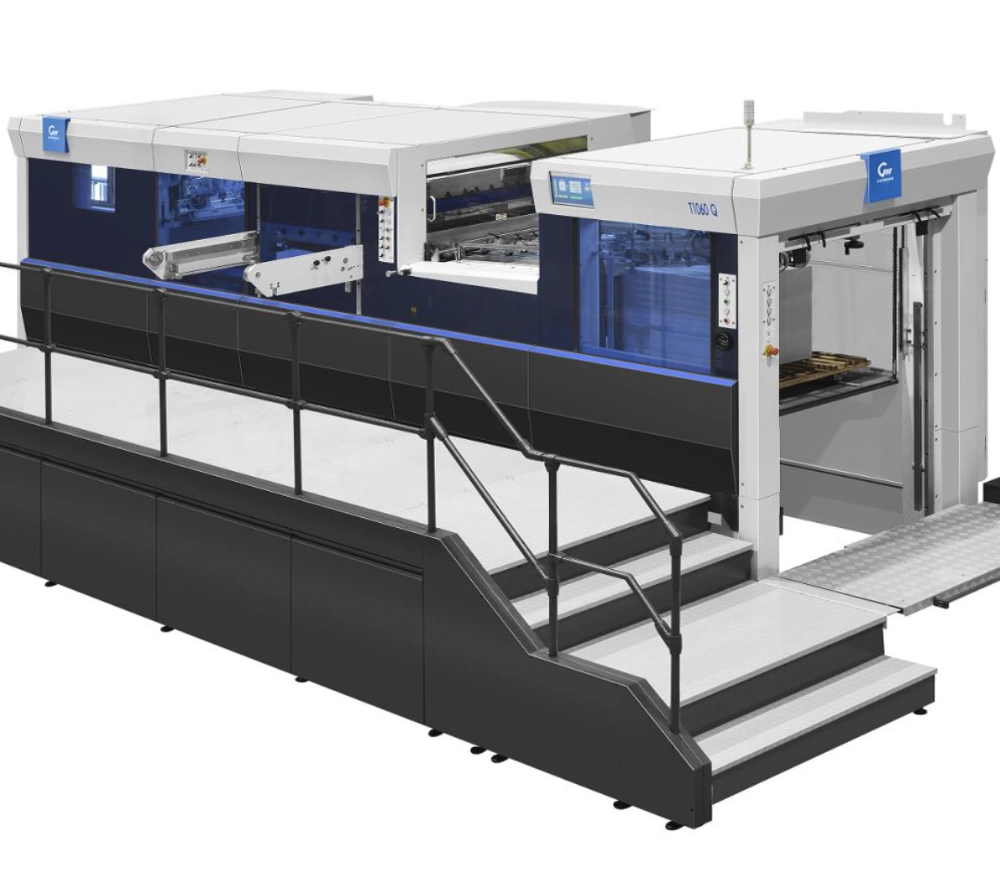

La découpe: une étape cruciale de l'imprimerie
Les étapes de découpe sont devenues plus cruciales encore depuis quelques années. En effets, cette etape impacte fortement la qualité et les délais. A l'ère de la digitalisation, Durectprint met en œuvre plusieurs solutions pour satisfaire les clients les plus exigeants tant en terme processus que de qualité et de délai.

La Découpe sur cylindre
La découpe sur cylindre Heidelberg impressionne toujours les visiteurs. Ces machines plutôt anciennes produisent des résultats de grande qualité, mais restent limitées lorsqu'il s'agit de grands volumes. La forme de découpe peut représenter un élément important du prix, mais vous pouvez aussi puiser dans notre grande bibliothèque existante pour éviter ces coûts.

La Découpe Platine
La platine de découpe représente la forme la plus industrialisée de découpe et rainage. La production d'emballages nécessite des systèmes de découpe robustes, avec un repérage de très haut niveau et des automatismes performants pour l'éjection des déchets. Nous utilisons cette technologie pour les clients industriels ayant de gros volumes.

Découpe Kama
La Kama offre une alternative intéressante pour les volumes de production intermédiaires. Elle permet également de réaliser des dorures à chaud de très grande qualité. La Kama se règle rapidement et permet d'enchaîner plusieurs traveaux dans la journée.

La Découpe Laser
Emerveillez, innovez, avec la découpe laser ! Le principe consiste à séparer des pièces ou des éléments par une action thermique. Cette technologie "sans contact" offre une excellente précision sans équivalent à ce jour. Pour un effet impecccable, on choisira de préférence un papier matière coloré, le laser pouvant marquer un papier très blanc sur les bords.